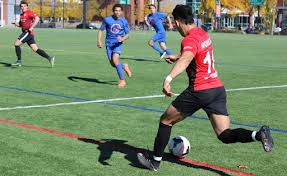

Competitive soccer can be a great fit for people who enjoy structure, teamwork, and pushing themselves to improve. Tryouts, practices, playoffs, and coaching create a high-pressure but rewarding environment that helps athletes grow both physically and mentally. Some people thrive under this pressure, while others may find it too stressful or time-consuming. Coaches and referees play important roles in keeping games fair and helping players develop. For example, the BYU Dragons Soccer Team (or BYU’s club and NCAA teams) are known for their strong coaching and consistent success in high-level competitions. Competitive teams like these offer amazing experiences, but they’re best for those who are ready to commit and enjoy the challenge.
Competitive

A table of the competitive dates and times
along with the location for them.
along with the location for them.